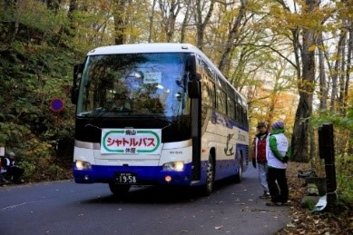
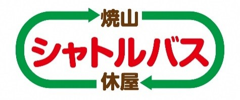

マイカー規制に関すること
| NO. | 質問内容 | 回答 |
|---|---|---|
| 1 | エコローフェスタって何？ |
・奥入瀬渓流を保全し、渓流の魅力を多くの皆さんに知っていただこうという目的で、渓流を静かにゆっくり楽しんで頂くためのイベントです。 ・当日は、車の乗り入れが規制（マイカー交通規制）されますのでご注意下さい。 |
| 2 | 毎年やっているの？来年もやるの？ |
・シャトルバスに乗車できません。 ・車椅子を利用されている方は、マイカー規制の対象外です。その旨、交差点の誘導員、スタッフに伝えてください。（身障者用バス・福祉車両等） |
| 3 | 当日は車で奥入瀬渓流に行けないの？ |
・ペットのバス内への持ち込みは容器（ケージ）に入れた場合のみ可能です。 ・容器の準備のない方は、奥入瀬渓流温泉スキー場前駐車場及び休屋地区発券所にはダンボール箱を用意しますのでご利用下さい。 |
| 4 | なぜ規制をするのですか？ | ・交通規制の対象車両で休屋駐車場を利用される場合（駐車料自動車500円、自動二輪車200円）、シャトルバスチケット料金をお一人様のみ通常の1,500円から自動車1,000円、自動二輪車1,300円に割引して販売させていただいております。 |
| 5 | なぜマイカーだけ規制するのですか？ 大型バスはなぜ規制しないのですか？ |
・乗車するにはシャトルバスチケットが必要となります。シャトルバス内でスタッフがチケットを販売しています。 ・事前に電子チケットもご購入できます。ＷＥＢから「奥入瀬渓流 シャトルバス」と検索してください。 |
| 6 | 低公害車（ハイブリッド）も通行できないのですか？ |
・乗車することはできません。また、その逆で、シャトルバスチケットでＪＲ路線バスに乗車することもできません。
シャトルバスとＪＲ路線バスの運行区別を明確にするためですのでご理解ください。 ※シャトルバスには写真のようにバス前面に「横断幕」を取り付けていますが、路線バスは「横断幕」が付いていません。   |
| 7 | 車椅子、身障者、高齢者も規制されるのですか？ |
・シャトルバスチケットは事前に購入できます。 ・「奥入瀬渓流 シャトルバス」と検索してください。 |
| 8 | 規制対象車輛は？ |
・時刻表は下記に掲載しております。
https://www.eco-oirase.com/ja/bus-ship#timetable ・「奥入瀬渓流 シャトルバス」と検索してください。 |
| 9 | JR EAST PASS、JAPAN RAIL PASS、青森･八戸･十和田湖フリーきっぷを使ってシャトルバスに乗車できるの？ |
・JR EAST PASS、JAPAN RAIL PASSを使用して、シャトルバスに乗車することはできません。 ・青森･八戸･十和田湖フリーきっぷ（JR路線バスチケット）を使用してシャトルバスに乗車することはできません。 |
| 10 | シャトルバスチケットは何時から販売開始ですか？ |
・シャトルバスチケットの販売開始時刻は、下記の通りです。 平日：8時45分～ 休日：7時45分～ |
| 11 | 障がい者割引や高齢者割引、その他割引はありますか？ |
・障がい者割引や高齢者割引はございません。 ・障がい者手帳（障がいの種類、等級による）をお持ちであれば、マイカー交通規制の対象外となります。 ・交通規制の対象車両で休屋駐車場を利用される場合（駐車料自動車500円、自動二輪車200円）、シャトルバスチケット料金をお一人様のみ通常の1,500円から自動車1,000円、自動二輪車1,300円に割引して販売させていただいております。 |
エコツアー、イベントに関すること
当日パンフレット提示
| NO. | 質問内容 | 回答 |
|---|---|---|
| 1 | イベントの内容は？ |
・下記をご覧ください。「https://www.eco-oirase.com/ja/event」 ・「奥入瀬渓流 エコロードフェスタ」で |
レンタサイクル
| NO. | 質問内容 | 回答 | ||||||||
|---|---|---|---|---|---|---|---|---|---|---|
| 1 | レンタサイクルの利用は？ |
・奥入瀬湧水館、石ケ戸休憩所、JRバス（子ノ口バス停）にあります。 奥入瀬湧水館 0176-74-1212 石ケ戸休憩所 0176-74-2355 JRバス子ノ口 0176-75-2244
|
||||||||
渓流区間に関すること
| NO. | 質問内容 | 回答 |
|---|---|---|
| 1 | 渓流区間の観光スポットはどこか？ |
・おすすめのコースは下記のとおりです。 静かなブナ林散策コース 黄瀬～惣辺交差点 →1.8km、徒歩約30分 「瀑布街道」満喫コース 雲井の流れ～銚子大滝 →2.7km、徒歩約50分 荘厳たる巨木群堪能コース 白糸の滝～子ノ口 →2.6km、徒歩約50分 ■主要地点での距離と時間（参考） 奥入瀬渓流温泉スキー場前～子ノ口 約14km、約4～5時間 石ケ戸～子ノ口 約 9km、約3～4時間 |
| 2 | 食事は出来ますか？ |
・渓流区間は石ケ戸休憩所でおにぎりなど軽食があります。 ・奥入瀬渓流温泉マルシェで軽食できます。 ・長時間歩く場合は、持参することをおすすめします。 ※子ノ口、休屋、奥入瀬渓流温泉地区ではお土産店とお食事処があります。 |
| 3 | 食事は出来ますか？ |
・渓流区間は石ケ戸休憩所でおにぎりなど軽食があります。 ・奥入瀬渓流温泉マルシェで軽食できます。 ・長時間歩く場合は、持参することをおすすめします。 ※子ノ口、休屋、奥入瀬渓流温泉地区ではお土産店とお食事処があります。 |
| 4 | トイレはありますか？ |
・渓流区間はトイレが少ないので事前にお済ませ下さい。 ○黄瀬公衆トイレ（奥入瀬渓流館～石ケ戸間） ○石ケ戸休憩所トイレ（車いす可） ○玉簾公衆トイレ（雲井の流れバス停から十和田湖側に500m） ※千筋の滝および銚子大滝付近にも仮設トイレを設置しています。（マイカー交通規制期間中のみの仮設トイレのため、ガイドマップには記載されていません）。 |
| 5 | 渓流は上流側（子ノ口側）から下流側（奥入瀬渓流温泉スキー場前）に向かって歩くべきですか。 |
・奥入瀬渓流は、下流側（奥入瀬渓流温泉スキー場前側）から上流側（子ノ口側）に歩くのがおすすめです。 ・理由は勾配がとても緩く、渓流の流れを見続けながら歩くことができるからです。 |
| 6 | どのような服装で歩くべきですか？ |
・長袖、長ズボンを推奨します。 ・足元は、トレッキングシューズを推奨します。 |